You picked the Wick and the Ophan of Hours. Round two draws each in more detail, at true scale beside the 1.80 m reference human: the Wick taller and more daunting, with its turn in four stages; the Ophan closer to Ezekiel's wheels, far larger than the castle. Confirm both, or say what to change, before anything is modelled. Round one's six options are kept further down.
Now 3.10 m, shoulders 0.88 m across, hunched, stooping to 2.50 m to pass under a 2.59 m arch with its light going first. The man becomes his own lantern: the ribs open into the lantern's bars with the candle burning in his chest, his head becomes a cage of bone with the kettle hat lifted on top as the vented cap, and his face hangs open in four flaps like scraped horn panes. The glaive has grown into his arm. His real lantern lies dark on the floor, because its flame went into him.
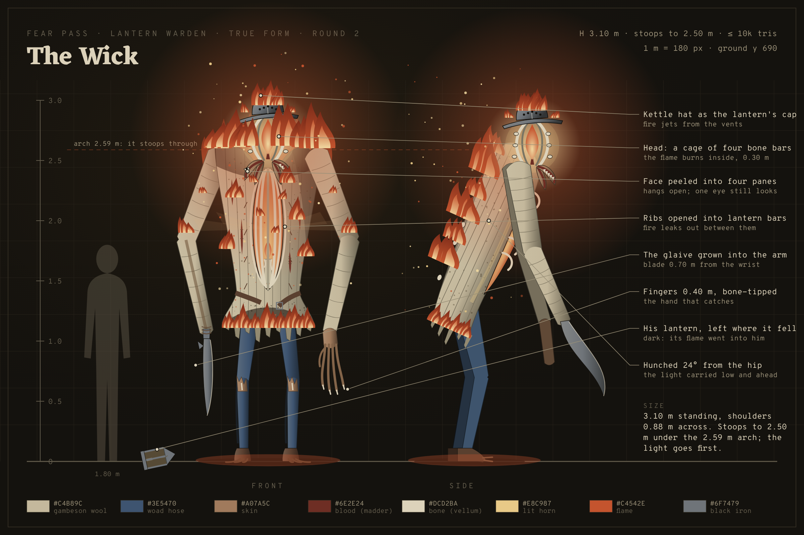
True scale, with the arch it must stoop through. Seen from the gate, it is the tallest thing in the bailey, and its light is at the height of the wall-walk.
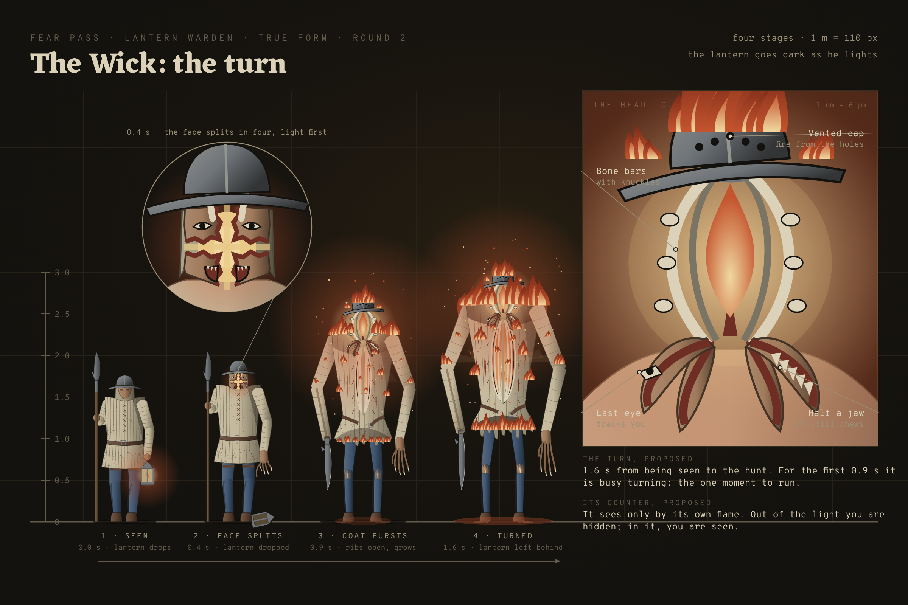
Seen, cap lifts, coat bursts, turned. The lantern goes dark at his feet in the first frame: the tell that the turn has started.
Closer to Ezekiel and Isaiah: a wheel within a wheel, rims high and dreadful and full of eyes all round, four faces (a man, a lion, an ox, an eagle), six wings as the seraphim have (two spread, two veiling its face, two covering its feet), lightning going out of the fire. It is 9.6 m tall with an 11 m wingspan; the castle's tallest ceiling is 5.2 m. The magical twist: it is a clock of the world. Its great rim is engraved with the four Ages' years, it stands a heartbeat early and late at once, and stone it passes through is pulled back to raw quarry rock, then closes behind it. It never uses a door.
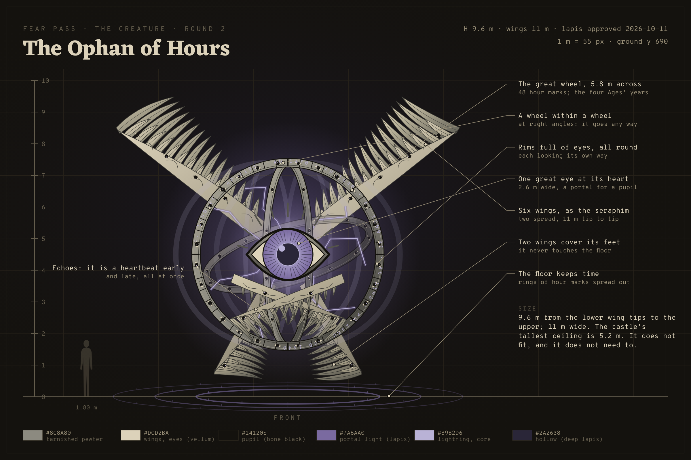
The whole being at true scale. The person at the left is you.
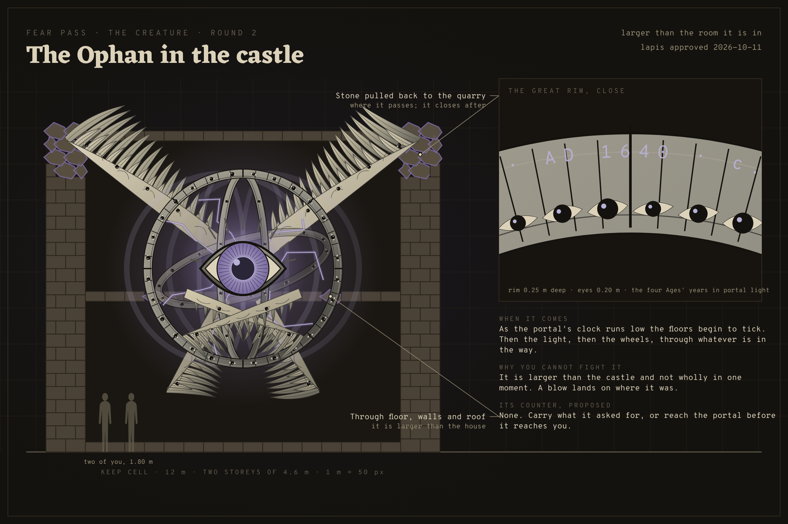
When it comes, the floors tick first, then the light, then the wheels, through whatever is in the way. Proposed counter: none. Carry what it asked for, or reach the portal first.
You picked the Wick and the Ophan of Hours from these.
Every option keeps pieces of the man (the kettle hat, the quilted coat, the woad hose, the lantern's flame) so players know which guard it was. Each one moves the light somewhere new, because the lantern is the thing you see first.
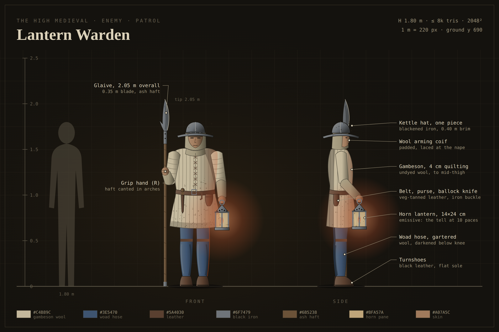
The guard as it stands now. You see the lantern at hip height long before you see him.
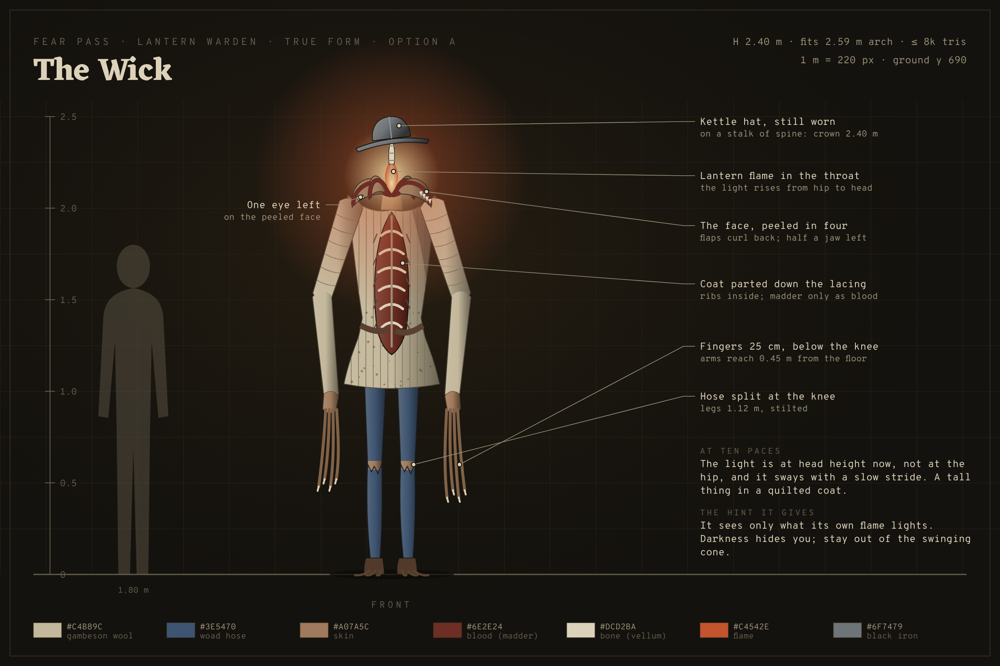
The face peels open and the flame burns where the head was, so the light jumps from hip to head height. Counter it suggests: it sees only what its own flame lights. Darkness hides you.
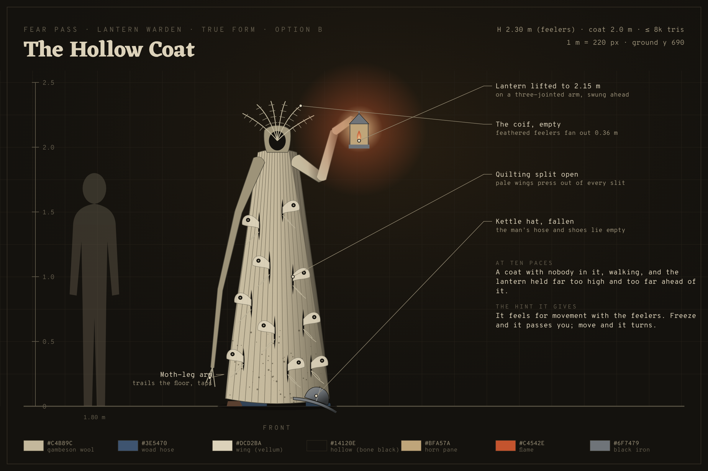
The man drops out of his clothes and the coat keeps walking, full of moths, the lantern held far too high and too far ahead. Counter it suggests: it feels for movement. Freeze and it passes.
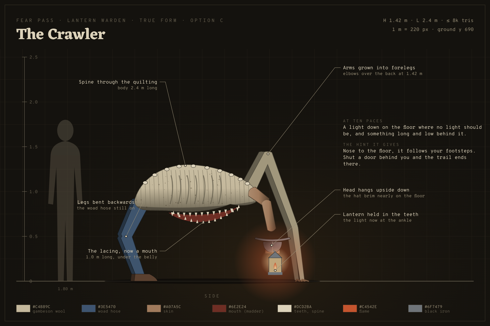
It drops to all fours; the coat's lacing becomes a mouth along the belly and the lantern swings at ankle height. Counter it suggests: it follows your footsteps. Shut a door behind you and the trail ends there.
It arrives in the castle as the portal's clock runs low and wants specific artifacts. All three use lapis, the art bible's colour for voice and portals, because it comes through time the way your portal does. The bible says no enemy uses lapis, so that is an exception for you to approve. Their counters are only suggestions here; how it hunts is a separate question in the handoff.
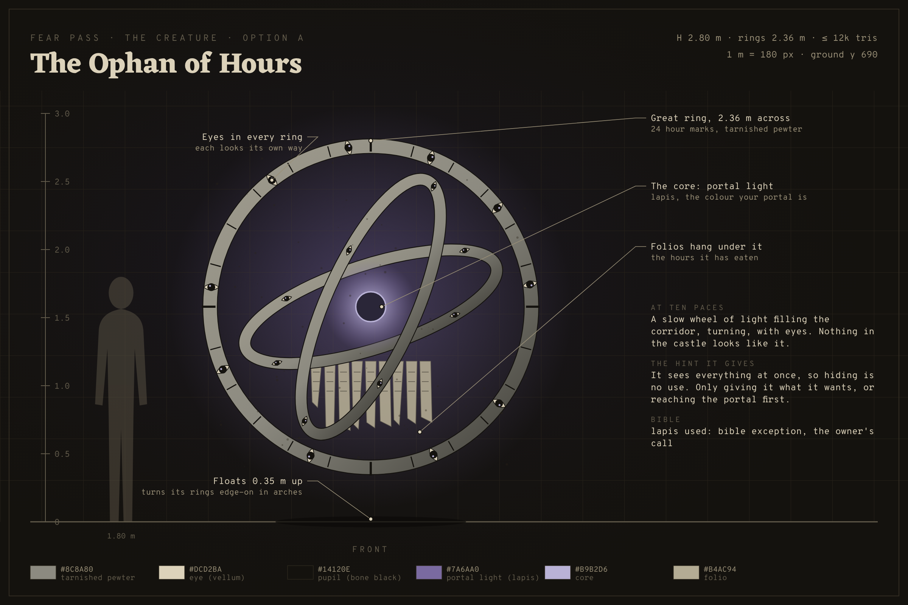
A biblical wheel of rings, hour marks and eyes, with your portal's light at its heart. Nothing else in the castle looks like it. Counter it suggests: it sees everything, so you cannot hide. Pay it, or reach the portal first.
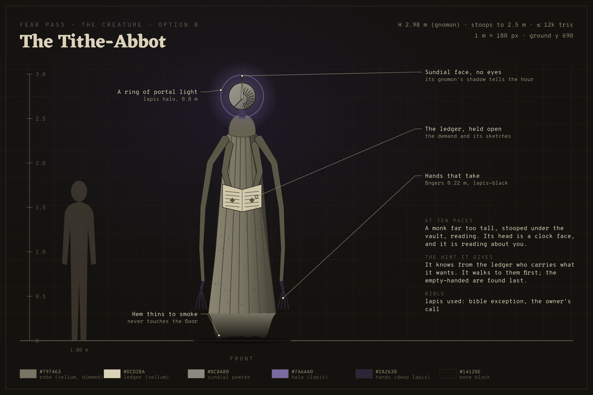
A monk far too tall, its head a sundial, reading the same ledger your Lair's book shows. It ties the creature to the quota directly. Counter it suggests: it walks first to whoever carries what it wants; the empty-handed are found last.
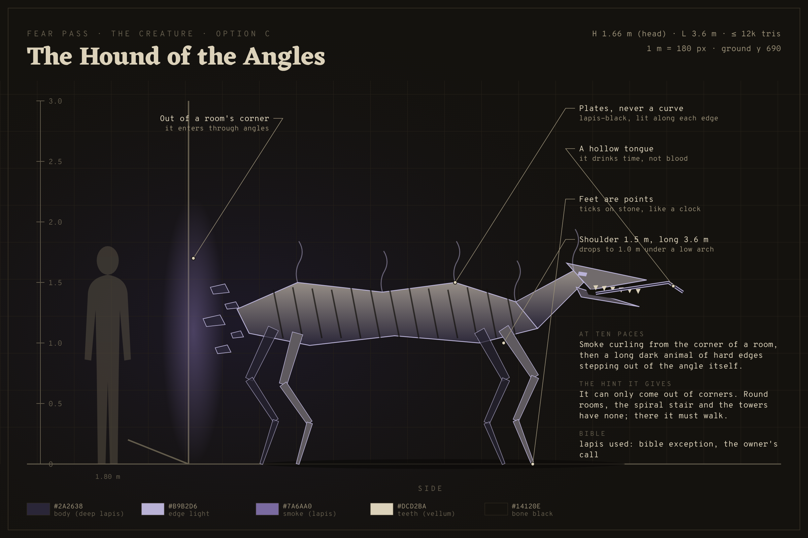
Lovecraft's hound of Tindalos: it steps out of the corners of rooms, all edges and no curves. Counter it suggests: it can only enter through corners. Round towers and the spiral stair are safe ground.